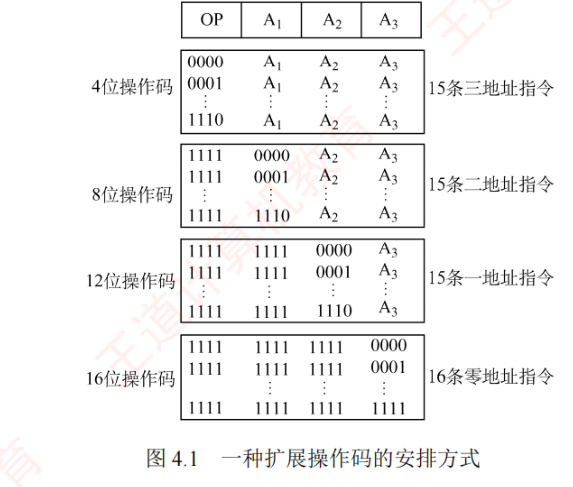

4.1 指令系统
指令系统是表征一台计算机性能的重要因素。这一节先弄清指令集合体系结构（ISA）到底规定了什么，再拆开一条指令看它的基本格式（操作码 + 地址码，按地址码个数分零/一/二/三地址），最后进入本章第一个硬核计算点：定长操作码与扩展操作码的指令条数计算，以及按功能划分的六类指令。
4.1.1指令集合体系结构
机器指令（简称指令）是指示计算机执行某种操作的命令。一台计算机的所有指令的集合构成该机的指令系统，也称指令集。指令系统是指令集合体系结构（ISA）中最核心的部分。ISA 完整定义了软件与硬件之间的接口，是机器语言或汇编语言程序员必须掌握的基础。
ISA 规定的内容主要包括：
- 指令格式、寻址方式，以及各种操作码所需的操作数的个数、类型和寻址约束；
- 操作数的数据类型，以及按大端还是小端方式存放；
- 程序可访问的寄存器编号、数量和位长，存储空间的大小和编址方式；
- 指令所支持的控制状态，如程序计数器、条件码（标志）的语义行为等。
ISA 规定了机器硬件的行为格式，因此机器语言或汇编语言程序员必须熟悉所用机器的 ISA。然而，大多数程序员仅使用高级语言（如 C/C++/Java）编程，高级语言抽象层级较高，隐藏了许多机器细节，导致程序员难以利用与硬件结构相关的优化手段提升性能。若能理解指令系统及硬件特性，则能开发出性能更优的程序。
4.1.2指令的基本格式
一条指令是机器语言的一个语句，由一组有意义的二进制代码组成，其基本格式为「操作码字段 + 地址码字段」：
| 操作码字段 | 地址码字段 |
操作码指明指令应执行的操作及功能，是识别指令、理解其作用以及确定地址码含义的关键，例如指示算术加减法、程序转移或返回等。地址码给出被操作的信息（指令或数据）的地址，包括源操作数地址、目的操作数地址、下一条指令地址（转移或子程序入口地址）等。
指令字长指一条指令所包含的二进制位数，取决于操作码长度、地址码长度及地址码个数。在同一个指令系统中，若所有指令字长都相等，则称为定长指令字结构，它取指和译码简单，有利于流水线实现；若指令字长随功能而变，则称为变长指令字结构。由于主存通常按字节编址，指令字长通常为字节的整数倍。
根据指令中操作数地址码数目的不同，可将指令分为以下几种格式。
1. 零地址指令
零地址: ┌────┐
│ OP │
└────┘指令中仅有操作码，无显式地址。这类指令有两种情况：
- 无须操作数的指令，如空操作（NOP）、停机、关中断等；
- 用于堆栈计算机的运算指令，其操作数隐含从栈顶和次栈顶弹出，运算结果压回栈顶。
2. 一地址指令
一地址: ┌────┬────┐
│ OP │ A₁ │
└────┴────┘其具体形式由操作码决定，常见有两种：
- 单操作数指令：按 \(A_1\) 地址读取操作数，进行 OP 操作后结果回存 \(A_1\)。指令含义：\(OP(A_1) \to A_1\)，如加 1、减 1、取反、求补、移位等；
- 累加器双操作数指令：\(A_1\) 为源操作数地址，另一操作数隐含在累加器 ACC，结果存入 ACC。指令含义：\((ACC)\,OP\,(A_1) \to ACC\)。
若地址码均为主存地址，完成一条一地址指令需 3 次访存（取指 1 次，取数 1 次，存结果 1 次）。
3. 二地址指令
二地址: ┌────┬────┬────┐
│ OP │ A₁ │ A₂ │
└────┴────┴────┘指令含义：\((A_1)\,OP\,(A_2) \to A_1\)。其中 \(A_1\) 为目的操作数地址（兼结果地址），\(A_2\) 为源操作数地址。若地址码均为主存地址，完成一条二地址指令需 4 次访存（取指 1 次，取两个操作数 2 次，存结果 1 次）。
4. 三地址指令
三地址: ┌────┬────┬────┬──────┐
│ OP │ A₁ │ A₂ │ A₃(结果) │
└────┴────┴────┴──────┘指令含义：\((A_1)\,OP\,(A_2) \to A_3\)。在三地址指令中，\(A_1\) 和 \(A_2\) 为两个源操作数地址，\(A_3\) 为结果地址。若地址码均为主存地址，完成一条三地址指令也需 4 次访存（取指 1 次，取两个操作数 2 次，存结果 1 次）。
4.1.3定长操作码指令格式
定长操作码指令是在指令字的最高位部分分配固定位数表示操作码。一个 \(n\) 位操作码字段的指令系统最多可表示 \(2^n\) 条指令。定长操作码有利于简化硬件译码并提高编译（指令译码）速度。在字长为 32 位或更长的系统中，这种格式是常用做法。
4.1.4扩展操作码指令格式
扩展操作码（变长操作码）指指令的操作码字段位数不固定，且分散在不同的位置。这种做法增加了指令译码和分析的难度，使控制器设计更加复杂。最常见的变长操作码方法是扩展操作码（见图 4.1），它使操作码长度随地址码减少而增加，不同地址数的指令具有不同长度的操作码，从而有效缩短指令字长。
【例】指令字长为 16 位，其中 4 位为基本操作码字段 OP，另有 3 个 4 位长的地址字段 \(A_1\)、\(A_2\) 和 \(A_3\)。若 4 位基本操作码全部用于三地址指令，则最多支持 16 条指令。实际安排如下：
- 三地址指令：4 位操作码
0000～1110共 15 条，保留1111作为扩展操作码； - 二地址指令：操作码为
1111 0000～1111 1110，共 15 条，保留1111 1111作为扩展操作码； - 一地址指令：操作码为
1111 1111 0000～1111 1111 1110，共 15 条，保留1111 1111 1111作为扩展操作码； - 零地址指令：操作码为
1111 1111 1111 0000～1111 1111 1111 1111，共 16 条。

复算一下这个安排的总容量：\(15 + 15 + 15 + 16 = 61\) 条指令。前三级各让出一个「短码前缀」往下扩展，最后一级不再扩展、16 个编码用满——这正是「短操作码不能是长操作码前缀」在数数上的体现。
除这种安排外，还有其他多种扩展方法。例如形成 15 条三地址指令、12 条二地址指令、63 条一地址指令和 16 条零地址指令，共 106 条指令，请读者自行分析。这里给出复算：三地址仍用 0000～1110 共 15 条；二地址用 1111 后接 0000～1011 共 \(2^4-4=12\) 条，留出 1111 11xx 中 4 个前缀；一地址用这 4 个前缀各扩展 16 种，得 \(4 \times 16 = 64\) 个编码，再保留 1 个作零地址前缀，即 \(64-1=63\) 条；零地址用最后 1 个前缀扩展满 16 条。合计 \(15+12+63+16=106\) 条。✓
在设计扩展操作码指令格式时，必须注意以下两点：
- 不允许短操作码成为长操作码的前缀，即短操作码不能与长操作码的前面部分相同；
- 各指令的操作码一定不能重复。
通常情况下，对使用频率较高的指令分配较短的操作码，对使用频率较低的指令分配较长的操作码，从而尽可能减少指令译码和分析的时间。
4.1.5指令的类型
设计指令系统时必须考虑应提供哪些操作类型。指令按功能可分为以下几种：
1. 数据传送指令
传送指令主要包括寄存器之间的传送（MOV）、从内存单元读取数据到 CPU 寄存器（LOAD）、从 CPU 寄存器写数据到内存单元（STORE）、进栈操作（PUSH）、出栈操作（POP）等。
2. 算术和逻辑运算指令
算术和逻辑运算指令主要有加（ADD）、减（SUB）、乘（MUL）、除（DIV）、加 1（INC）、减 1（DEC）、与（AND）、或（OR）、取反（NOT）、异或（XOR）等。
3. 移位操作指令
移位指令主要有算术移位、逻辑移位、循环移位等。
4. 程序控制转移指令
顺序控制指令主要有无条件转移（JMP）、条件转移（BRANCH）、调用（CALL）、返回（RET）、陷阱（TRAP）等。无条件转移指令在任何情况下都执行转移操作；而条件转移指令仅在特定条件满足时才执行转移操作，转移条件通常是某个标志位的值或多个标志位的组合。
调用指令与转移指令的区别在于：调用指令会保存下一条指令的地址（返回地址），以便子程序执行结束后能返回到主程序继续执行；而转移指令则不返回。
5. 输入/输出指令
输入/输出指令用于完成 CPU 与外部设备交换数据或传送控制命令及状态信息。
6. CPU 控制指令
CPU 控制指令主要有停机、开中断、关中断、系统模式切换以及进入特殊处理程序等。这类指令只能在操作系统内核代码中使用，以防止用户误用对系统造成危害。